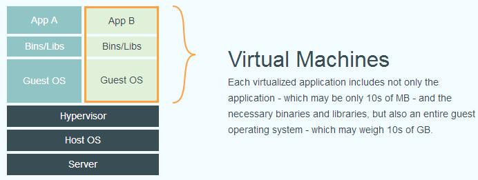
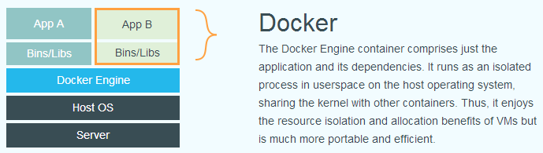
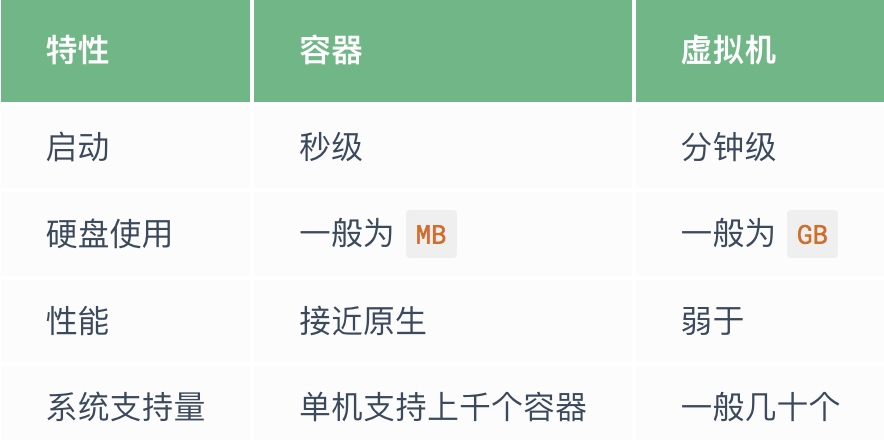
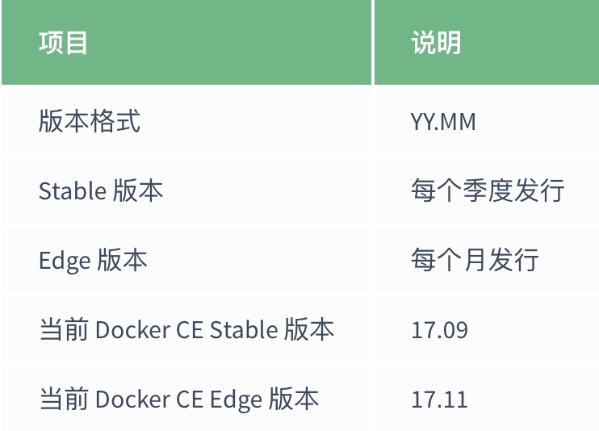

1 简介
1.1 什么是Docker
Docker 最初是 dotCloud 公司创始人 Solomon Hykes 在法国期间发起的一个公司内部项目，它是基于 dotCloud 公司多年云服务技术的一次革新，并于 2013 年 3 月以 Apache 2.0 授权协议开源，主要项目代码在 GitHub 上进行维护。Docker 项目后来还加入了 Linux 基金会，并成立推动 开放容器联盟（OCI）。
Docker 自开源后受到广泛的关注和讨论，至今其 GitHub 项目已经超过 4 万 6 千个星标和一万多个 fork。甚至由于 Docker 项目的火爆，在 2013 年底，dotCloud 公司决定改名为 Docker。Docker 最初是在 Ubuntu 12.04 上开发实现的；Red Hat 则从 RHEL 6.5 开始对 Docker 进行支持；Google 也在其 PaaS 产品中广泛应用 Docker。
Docker 使用 Google 公司推出的 Go 语言 进行开发实现，基于 Linux 内核的 cgroup，namespace，以及 AUFS 类的 Union FS 等技术，对进程进行封装隔离，属于 操作系统层面的虚拟化技术。由于隔离的进程独立于宿主和其它的隔离的进程，因此也称其为容器。最初实现是基于 LXC，从 0.7 版本以后开始去除 LXC，转而使用自行开发的 libcontainer，从 1.11 开始，则进一步演进为使用 runC 和 containerd。
Docker 在容器的基础上，进行了进一步的封装，从文件系统、网络互联到进程隔离等等，极大的简化了容器的创建和维护。使得 Docker 技术比虚拟机技术更为轻便、快捷。
下面的图片比较了 Docker 和传统虚拟化方式的不同之处。传统虚拟机技术是虚拟出一套硬件后，在其上运行一个完整操作系统，在该系统上再运行所需应用进程；而容器内的应用进程直接运行于宿主的内核，容器内没有自己的内核，而且也没有进行硬件虚拟。因此容器要比传统虚拟机更为轻便。


1.2 为什么要用Docker
作为一种新兴的虚拟化方式，Docker跟传统的虚拟化方式相比具有众多的优势。
更高效的利用系统资源
由于容器不需要进行硬件虚拟以及运行完整操作系统等额外开销，Docker对系统资源的利用率更高，无论是应用执行速度，内存损耗或文件存储速度，都要比传统虚拟化技术更高效。因此，相比虚拟化技术，一个相同配置的主机，往往可以运行更多数量的应用
更快速的启动时间
传统的虚拟机技术启动应用服务往往需要数分钟，而Docker容器应用，由于直接运行于宿主机内核，无法启动完整的操作系统，因此可以做到秒级，甚至毫秒级的启动时间，大大的节约了开发，测试，部署的时间
一致的运行环境
开发过程中一个常见的问题是环境一致性问题。由于开发环境、测试环境、生产环境不一致，导致有些 bug 并未在开发过程中被发现。而 Docker 的镜像提供了除内核外完整的运行时环境，确保了应用运行环境一致性，从而不会再出现 「这段代码在我机器上没问题啊」 这类问题。
持续交付和部署
对开发和运维（DevOps）人员来说，最希望的就是一次创建或配置，可以在任意地方正常运行。
使用 Docker 可以通过定制应用镜像来实现持续集成、持续交付、部署。开发人员可以通过 Dockerfile 来进行镜像构建，并结合 持续集成(Continuous Integration) 系统进行集成测试，而运维人员则可以直接在生产环境中快速部署该镜像，甚至结合 持续部署(Continuous Delivery/Deployment) 系统进行自动部署。
而且使用 Dockerfile 使镜像构建透明化，不仅仅开发团队可以理解应用运行环境，也方便运维团队理解应用运行所需条件，帮助更好的生产环境中部署该镜像。
更轻松的迁移
由于 Docker 确保了执行环境的一致性，使得应用的迁移更加容易。Docker 可以在很多平台上运行，无论是物理机、虚拟机、公有云、私有云，甚至是笔记本，其运行结果是一致的。因此用户可以很轻易的将在一个平台上运行的应用，迁移到另一个平台上，而不用担心运行环境的变化导致应用无法正常运行的情况。
更轻松的维护和扩展
Docker 使用的分层存储以及镜像的技术，使得应用重复部分的复用更为容易，也使得应用的维护更新更加简单，基于基础镜像进一步扩展镜像也变得非常简单。此外，Docker 团队同各个开源项目团队一起维护了一大批高质量的 官方镜像，既可以直接在生产环境使用，又可以作为基础进一步定制，大大的降低了应用服务的镜像制作成本。
对比传统虚拟机总结

2 基本概念
2.1 Docker 镜像
我们都知道，操作系统分别为内核和用户空间。对于Linux而言，内核启动后，会挂载root文件系统为其提供用户空间的支持。而Docker镜像（image），就相当于是一个root文件系统。比如官方镜像
ubuntu:16:04就包含了完整的一套Ubuntu 16.04就包含了完整的一套Ubuntu 16.04最小系统的root文件系统；
Docker镜像是一个特殊的文件系统，除了提供容器运行时所需的程序，库，资源，配置等文件外，还包含了一些为运行时准备的一些参数（如匿名卷，环境变量，用户等）。镜像不包含任何动态数据，其内容在创建之后也不会被改变。
分层存储
因为镜像包含操作系统完整的 root 文件系统，其体积往往是庞大的，因此在 Docker 设计时，就充分利用 Union FS 的技术，将其设计为分层存储的架构。所以严格来说，镜像并非是像一个 ISO 那样的打包文件，镜像只是一个虚拟的概念，其实际体现并非由一个文件组成，而是由一组文件系统组成，或者说，由多层文件系统联合组成。
镜像构建时，会一层层构建，前一层是后一层的基础。每一层构建完就不会再发生改变，后一层上的任何改变只发生在自己这一层。比如，删除前一层文件的操作，实际不是真的删除前一层的文件，而是仅在当前层标记为该文件已删除。在最终容器运行的时候，虽然不会看到这个文件，但是实际上该文件会一直跟随镜像。因此，在构建镜像的时候，需要额外小心，每一层尽量只包含该层需要添加的东西，任何额外的东西应该在该层构建结束前清理掉。
分层存储的特征还使得镜像的复用、定制变的更为容易。甚至可以用之前构建好的镜像作为基础层，然后进一步添加新的层，以定制自己所需的内容，构建新的镜像。
2.2 Docker容器
镜像（Image）和容器（Container）的关系，就像是面向对象程序设计中的类和实例一样，镜像是静态的定义，容器是镜像运行时的实体。容器可以被创建，启动，停止，删除，暂停等。
容器的实质是进程，但与直接在宿主执行的进程不同，容器进程运行于属于自己的独立的命名空间。因此容器可以拥有自己的
root文件系统，自己的网络配置，自己的进程空间，甚至自己的用户ID空间。容器内的进程是运行在一个隔离的环境里，使用起来，就好像是在一个独立于宿主的系统下操作一样。这种特性使得容器封装的应用比直接在宿主运行更加安全。也因为这种隔离的特性，很多人初学 Docker 时常常会混淆容器和虚拟机。
前面讲过镜像使用的是分层存储，容器也是如此。每一个容器运行时，是以镜像为基础层，在其上创建一个当前容器的存储层，我们可以称这个为容器运行时读写而准备的存储层为容器存储层。
容器存储层的生存周期和容器一样，容器消亡时，容器存储层也随之消亡。因此，任何保存于容器存储层的信息都会随容器删除而丢失。
按照 Docker 最佳实践的要求，容器不应该向其存储层内写入任何数据，容器存储层要保持无状态化。所有的文件写入操作，都应该使用 数据卷（Volume）、或者绑定宿主目录，在这些位置的读写会跳过容器存储层，直接对宿主（或网络存储）发生读写，其性能和稳定性更高。
数据卷的生存周期独立于容器，容器消亡，数据卷不会消亡。因此，使用数据卷后，容器删除或者重新运行之后，数据却不会丢失。
2.3 Docker Registry
镜像构建完成后，可以很容易的在当前宿主机上运行，但是，如果需要在其它服务器上使用这个镜像，我们就需要一个集中的存储、分发镜像的服务，Docker Registry 就是这样的服务。
一个 Docker Registry 中可以包含多个仓库（Repository）；每个仓库可以包含多个标签（Tag）；每个标签对应一个镜像。
通常，一个仓库会包含同一个软件不同版本的镜像，而标签就常用于对应该软件的各个版本。我们可以通过 <仓库名>:<标签> 的格式来指定具体是这个软件哪个版本的镜像。如果不给出标签，将以 latest 作为默认标签。
以 Ubuntu 镜像 为例，ubuntu 是仓库的名字，其内包含有不同的版本标签，如，14.04, 16.04。我们可以通过 ubuntu:14.04，或者 ubuntu:16.04 来具体指定所需哪个版本的镜像。如果忽略了标签，比如 ubuntu，那将视为 ubuntu:latest。
仓库名经常以 两段式路径 形式出现，比如 jwilder/nginx-proxy，前者往往意味着 Docker Registry 多用户环境下的用户名，后者则往往是对应的软件名。但这并非绝对，取决于所使用的具体 Docker Registry 的软件或服务。
Docker Registry 公开服务
Docker Registry 公开服务是开放给用户使用、允许用户管理镜像的 Registry 服务。一般这类公开服务允许用户免费上传、下载公开的镜像，并可能提供收费服务供用户管理私有镜像。
最常使用的 Registry 公开服务是官方的 Docker Hub，这也是默认的 Registry，并拥有大量的高质量的官方镜像。除此以外，还有 CoreOS 的 Quay.io，CoreOS 相关的镜像存储在这里；Google 的 Google Container Registry，Kubernetes 的镜像使用的就是这个服务。
由于某些原因，在国内访问这些服务可能会比较慢。国内的一些云服务商提供了针对 Docker Hub 的镜像服务（Registry Mirror），这些镜像服务被称为加速器。常见的有 阿里云加速器、DaoCloud 加速器 等。使用加速器会直接从国内的地址下载 Docker Hub 的镜像，比直接从 Docker Hub 下载速度会提高很多。在 安装 Dcoekr 一节中有详细的配置方法。
国内也有一些云服务商提供类似于 Docker Hub 的公开服务。比如 时速云镜像仓库、网易云镜像服务、DaoCloud 镜像市场、阿里云镜像库 等。
私有 Docker Registry
除了使用公开服务外，用户还可以在本地搭建私有 Docker Registry。Docker 官方提供了 Docker Registry 镜像，可以直接使用做为私有 Registry 服务。在 私有仓库 一节中，会有进一步的搭建私有 Registry 服务的讲解。
开源的 Docker Registry 镜像只提供了 Docker Registry API 的服务端实现，足以支持 docker 命令，不影响使用。但不包含图形界面，以及镜像维护、用户管理、访问控制等高级功能。在官方的商业化版本 Docker Trusted Registry 中，提供了这些高级功能。
除了官方的 Docker Registry 外，还有第三方软件实现了 Docker Registry API，甚至提供了用户界面以及一些高级功能。比如，VMWare Harbor 和 Sonatype Nexus。
3 安装 Docker
Docker在 1.13 版本之后，从 2017 年的 3 月 1 日开始，版本命名规则变为如下：

同时 Docker 划分为 CE 和 EE。CE 即社区版（免费，支持周期三个月），EE 即企业版，强调安全，付费使用。
Docker CE 每月发布一个 Edge 版本 (17.03, 17.04, 17.05…)，每三个月发布一个 Stable 版本 (17.03, 17.06, 17.09…)，Docker EE 和 Stable 版本号保持一致，但每个版本提供一年维护。
3.1 环境准备
系统要求
Docker CE 支持 64 位版本 CentOS 7，并且要求内核版本不低于 3.10。 CentOS 7 满足最低内核的要求，但由于内核版本比较低，部分功能（如 overlay2 存储层驱动）无法使用，并且部分功能可能不太稳定。
卸载旧版本
旧版本的 Docker 称为 docker 或者 docker-engine，使用以下命令卸载旧版本：
1 | $ sudo yum remove docker \ |
3.2 使用 yum 源 安装
执行以下命令安装依赖包：
1 | $ sudo yum install -y yum-utils \ |
鉴于国内网络问题，强烈建议使用国内源，官方源请在注释中查看
鉴于国内网络问题，强烈建议使用国内源，官方源请在注释中查看
1 | $ sudo yum-config-manager \ |
如果需要最新版本的 Docker CE 请使用以下命令：
1 | $ sudo yum-config-manager --enable docker-ce-edge |
如果需要测试版本的 Docker CE 请使用以下命令：
1 | $ sudo yum-config-manager --enable docker-ce-test |
3.3 安装 Docker CE
更新 yum 软件源缓存，并安装 docker-ce。
1 | $ sudo yum makecache fast |
3.4 启动 Docker CE
1 | sudo systemctl enable docker |